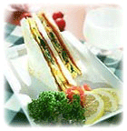
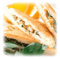

바쁘고 입맛 없는 아침, 그럴수록 끼니를 거르지 않는 것이 하루를 활기차게 시작하는 비결이죠.
하지만, 바쁘다는 이유로 아침을 거르는 분들이 많다는데요. 아침식사는 건강을 지키는 기본으로
뇌의 활동을 도와주고 생활의 리듬을 안정시키는 등 중요한 역할을 한답니다.
이런 만틈 만들기도 쉽고, 먹기 간편하고, 영양만점인 메뉴로 건강을 지키는 지혜가 필요하겠죠.
그래서 짧은 시간 안에 만들 수 있는 영양 만점인 아침식사를 소개해 드리려고 해요.
아침에는 위에 부담을 주지 않는 고단백 재료를 활용하는 것이 가장 중요합니다. 고단백 음식으로는
달걀, 우유, 감자, 야채가 있어요.

달걀을 이용하여 토스트를 부쳐 우유와 곁들여 먹는 것이 가장 일반적인 스피드식사죠. 하지만,
조금만 시간을 내어서 색다른 음식을 만들어 보세요.
감자를 끓여 체에 걸러 만든 감자수프, 양송이를 넣은 양송이수프는 입맛 없는 분들에게
좋은 메뉴입니다.
|